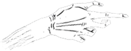

"Welcome Foolish Mortals !"
Construite en 1992, Phantom Manor est la version européenne à Disneyland Paris de The Haunted Mansion. C'est une attraction majeure dans la région de Frontierland, un des lands du Parc, qui se déroule dans l'univers du Far West.
Le sujet de l'attraction repose sur l'histoire d'un mariage condamné et d'un esprit maléfique menaçant, appellé le Phantom. Le théme est considéré par tous, comme beaucoup plus sombre que l'attraction originale.
"Entrez, braves mortels,
et visitons ensemble ce fameux manoir..."